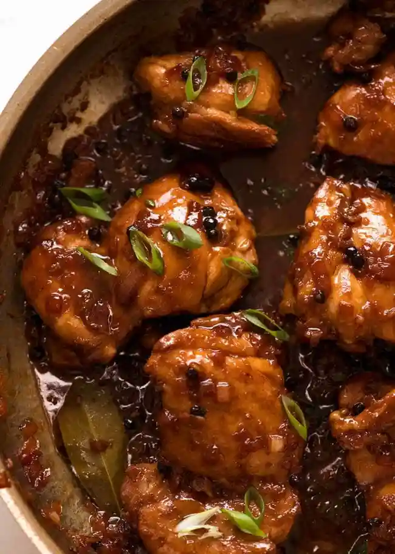
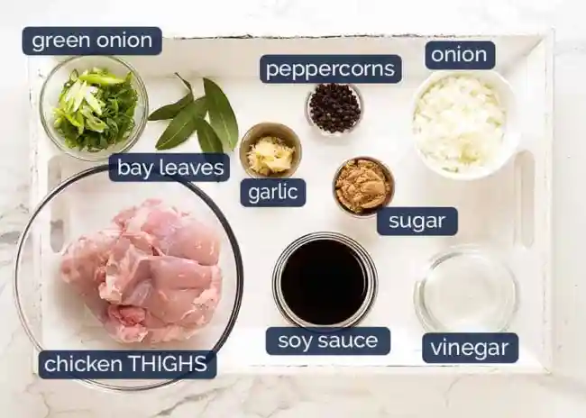

The word "adobo" comes from the Spanish word "adobar," meaning marinade or picking sauce. While the name has Spanish origins, the Filipino adobo dish has a history that came before Spanish colonization. Filipino natives used vinegar and salt to preserve food in warm climates. Chinese traders introduced soy sauce, which became a key ingredient. Unlike the spicy Spanish and Mexican versions of adobo, Filipino adobo relies mainly on vinegar for flavor and meat tenderization.

Filipino adobo has unique ingredients and a history rooted in the Philippines' culinary traditions.
🇵🇭 Ingredients 🇵🇭
⋆✭⋆CHICKEN AND MARINADE⋆✭⋆
750g / 1.5 lb chicken thigh filets
3 garlic cloves
1/3 cup (85ml) soy sauce
1/3 cup + 2 tbsp white vinegar
4 bay leaves (fresh) or 3 dried
⋆✭⋆FOR COOKING⋆✭⋆
2 tbsp oil
3 garlic cloves
1 small brown onion
1 1/2 cups (375 ml) water
2 tbsp brown sugar
1 tbsp whole black pepper
⋆✭⋆SERVING⋆✭⋆
2 green onions/scallions

🇵🇭 Directions 🇵🇭
Mix the chicken and marinade ingredients in a bowl, allowing them to marinate for at least 20 minutes or up to overnight.
In a skillet, heat 1 tablespoon of oil over high heat, then transfer the chicken from the marinate and sear both sides until they turn brown, around 1 minute for each side. DO NOT cook the chicken all the way!
Remove the chicken from the skillet and set it aside.
Heat the remaining oil in the skillet, then add garlic and onion, cooking for about 1 and a half minutes.
Add the reserved marinade, water, sugar, and black pepper to the skillet. Bring the mixture to a simmer, then reduce the heat to medium-high and let it bubble for 5 minutes.
Place the chicken in the skillet, with the smooth side facing down. Allow the chicken to simmer uncovered for 20-25 minutes, with no stirring. Around 15 minutes, flip the chicken over. Let the chicken continue to bubble until the sauce thickens.
If the sauce hasn't thickened to your desired consistency, then you can take the chicken out and place it on a plate. The sauce will simmer on its own, as it will thicken more rapidly in this method. Once it reaches the desired thickness, return the chicken to the skillet and coat it in the glaze.
After coating the chicken in the glaze, it's now ready to be served! Enjoy your FILIPINO CHICKEN ADOBO!
Estrella, Serna. “Adobo: The History behind a National Favorite.” Adobo: The History Behind A National Favorite | Pepper.Ph, Pepper.ph, 11 July 2022, pepper.ph/blog/adobo-history.
Nagi, Nagi. “Filipino Chicken Adobo (Flavour Kapow!).” RecipeTin Eats, 28 Feb. 2020, www.recipetineats.com/filipino-chicken-adobo-flavour-kapow/.